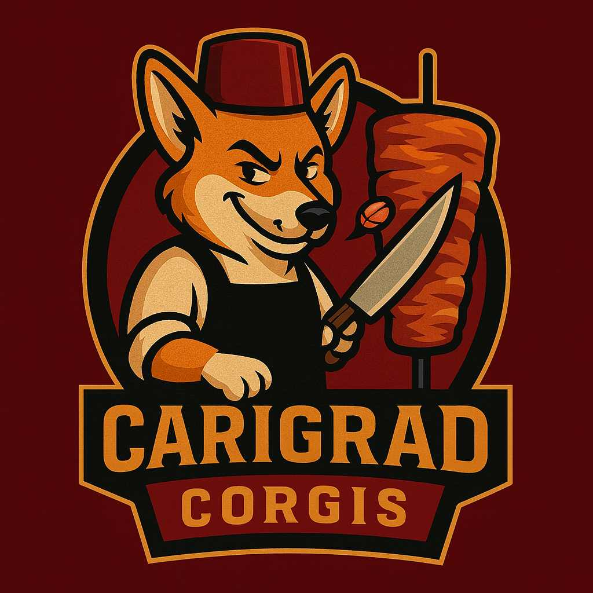

EKIPE
Aleks Jurhar Lagos Hedgehogs

Team owner: Aleks Jurhar
Joined league: 2017 (season 1)
History: Team Jurhar (season 1-3),
Team Back-to-Davis (season 5)
Lagos Hedgehogs (season 6-8)
Arena: Ulker Sports Arena
Capacity: 14.000
Location: Carigrad, Turkey
Average ranking: 4.13 (1st)
| Sezona | Uvrstitev |
|---|---|
| 2017/18 | 7 |
| 2018/19 | 5 |
| 2019/20 | 7 |
| 2020/21 | 1 |
| 2021/22 | 1 |
| 2022/23 | 5 |
| 2023/24 | 4 |
| 2024/25 | 3 |
| 2025/26 | ... |
| AVERAGE | 4.13 |
Intervju - ALEKS JURHAR (september, 2024)
Kar nekaj govoric se širi okoli lige glede Aleksa in njegove trenutne forme, češ da je njegova kariera v zatonu.
1) Aleks, v medijih se pojavljajo očitki da ste washed fantasy manager, saj gre krivulja vaših rezultatov po b2b naslovu strmo navzdol. Kaj pravite na to?
Mediji pogosto napihujejo situacijo. Za 2 sezoni smo rajše predal zmage drugim, da celotna liga ne popolnoma zamre, še vseeno pa sta 5. In 4. Mesto kar močnjo višja od naprimer povprečne uvrstitve managerja Koal.
Letos definitivno ponovno ciljamo na zmago.
2) Nameravate tudi letos izbrati veliko igralcev, za katere je že vnaprej znano da so out ali pa so stekleni, da si zagotovite razlog za jamranje?
Letos je strateški štab v Lagosu rahlo spremenil taktike, ampak dvomimo da se bo GM močno odtujil od high risk high reward izbir. Vseekakor je zabavno, da te lahko LM na dnevni bazi označuje za posranega, ker se Zionu ne lubi lavfat po igrišču,
ampak malo manj zabavno ko Lamelo tekme spremlja iz kavča.
3) Lani ste verjetno postregli z najboljšim value izborom sezone (Jalen Johnson op.a.), ali imate tudi za letos že kakšnega asa v rokavu ali pa Josh Lloyd še ni objavil tega na svojem kanalu?
Jalen Johnson je bil lani once in a decade pick in seveda 35-ke iz zanjega mesta ne moremo pričakovati, imamo pa vseeno nagledanih par kandidatov, ki bi znali zapolniti tole luknjo pri Ježkih. Definitivno pa nebomo v zadnji rudni draftali playerjev tipa
Talen Horton Tucker in pa Terrance Mann (pomežik LMju)
Zaključna misel
Zelo sem vesel, da smo v ligo dobili tri novince, ki pa se bodo seveda mogli dokazat. Prva stvar je že ta, da s tem ko prideš v ligo potrebuješ sodelovati aktivno tudi v našem chatu, kar mladički zaenkrat še ne delajo.
Kar se tiče samih nasprotnikov za to sezono mislim, da smo sami sebi največji nasprotnik. Verjamem, da bo ta sezona spet izjemno zanimiva in, da bo moj glavni konkurent za naslednji ring moj glavni konkurent tudi pri izzivu za petje pesmice Damjana Murka…
Kdor ve ve, kdor pa ne je pa pozabil. Drugih pa se ne bojimo saj mislimo, da je njihov čas že minil. Lep pozdrav